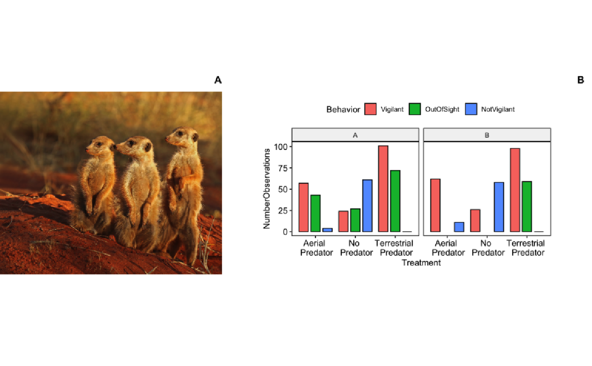
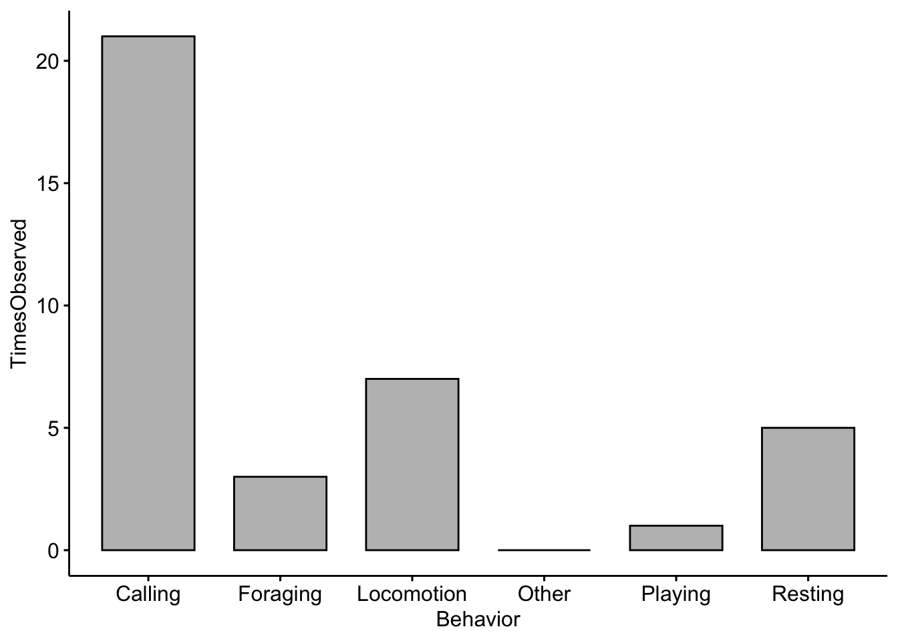
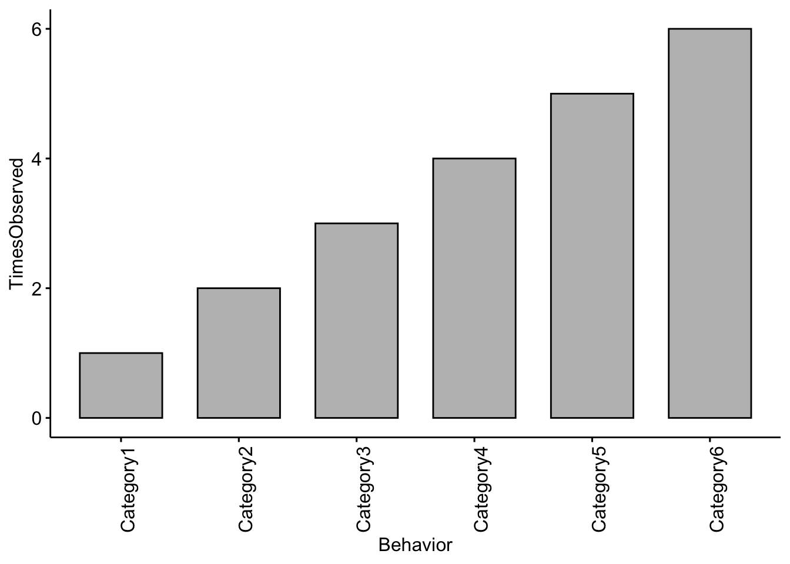
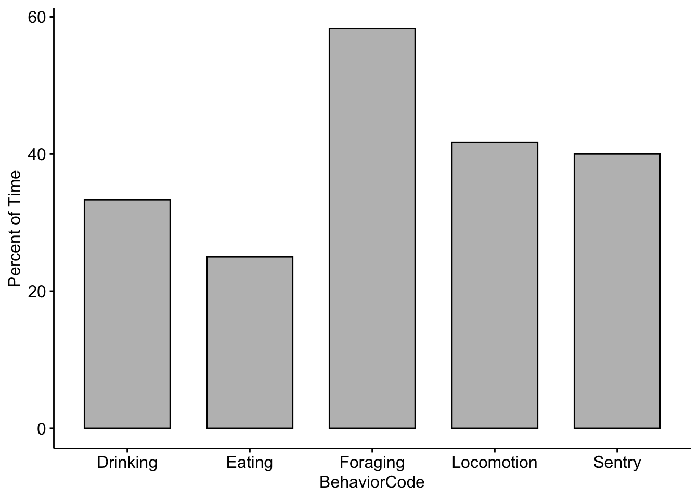
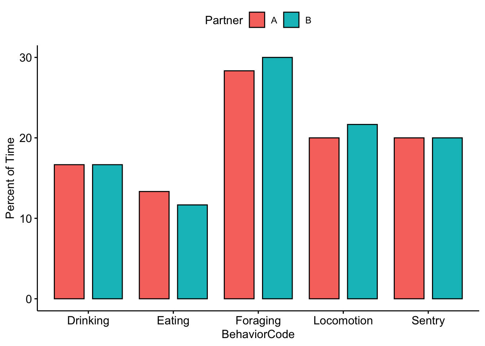
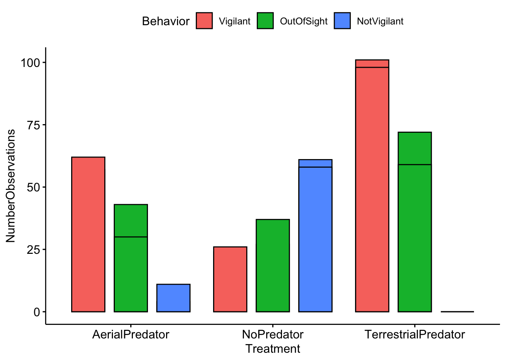

Computer Lab 2. Activity Budgets and Ethograms

Background
In this lab you will continue to become familiar with the ways that we visualize and analyze behavioral data. For this lab I assume students have conducted Field Labs 1 and 2, so you should be familiar with how focal behavioral data are collected. Field Lab 1 data collection involves observation of animals in your own backyard and the creation of an ethogram. For Field Lab 2 data students learn how to collect focal data and scan data using meerkat videos following the methods outlined in: Hammond 2019, Vigilance behaviour in meerkats, ASAB Education.
Goals of the exercises
The main goal(s) of today’s lab are to:
1) Enter and visualize your ethogram data
2) Calculate meerkat activity budgets
3) Compare inter-observer reliability from the meerkat data
Getting started
First we need to load the relevant packages for our data analysis. Packages contain all the functions that are needed for data analysis.
Part 1. Enter and visualize your ethogram data
Here we will do an exploratory analysis of the ethograms that you created in Field Lab 1. First we will use some simulated (or made up) data to create our ethogram. In R we call the objects that contain our data ‘dataframes’.
EthogramDF <-
data.frame(Behavior=c('Resting','Locomotion','Foraging','Calling','Playing','Other'),
TimesObserved=c(5,7,3,21,1,0))If you run the object ‘EthogramDF’ you should see your table:
## Behavior TimesObserved
## 1 Resting 5
## 2 Locomotion 7
## 3 Foraging 3
## 4 Calling 21
## 5 Playing 1
## 6 Other 0A common command to check data structure is ‘str’. Here we can see our dataframe has two variables:‘Behavior’ and ‘TimesObserved’.
## 'data.frame': 6 obs. of 2 variables:
## $ Behavior : Factor w/ 6 levels "Calling","Foraging",..: 6 3 2 1 5 4
## $ TimesObserved: num 5 7 3 21 1 0Now we can make a barplot to visualize our results using the ‘ggpubr’ package

In the space below I want you to add in your own ethogram categories and create a plot based on the ethogram you created in Field lab 1.
Change the Behavior categories (i.e. Category1) to the categories you used in your ethogram and the TimesObserved values to the actual values you recorded
EthogramDFupdated <- data.frame(Behavior=c('Category1','Category2','Category3',
'Category4','Category5','Category6'),
TimesObserved=c(1,2,3,4,5,6))If you run the object you should see your dataframe
## Behavior TimesObserved
## 1 Category1 1
## 2 Category2 2
## 3 Category3 3
## 4 Category4 4
## 5 Category5 5
## 6 Category6 6NOTE: Your plot will look different than this as you will enter your own data above!

Question 1
Change the code to reflect the categories you used in your ethogram and change the TimesObserved values to the actual values you recorded. NOTE: You may need to add more categories if your ethogram had more than six. What trends did you notice in terms of behaviors observed?
Part 2. Calculate meerkat activity budgets.
Our previous ethograms only included counts of different behaviors that we observed, but we did not standardize our results in any way. Activity budgets give an indication of how much time an animal spends doing each activity; these are generally expressed as percentages.
First we need to import the data. If you are using RStudio Cloud you can import your data by clicking the ‘upload’ button and find the datasheet saved on your computer. You can then use the following lines to read your data into R.
MeerkatFocalData <- read.csv('MeerkatFocalData.csv')
MeerkatScanData <- read.csv('MeerkatScanData.csv')We also have sample data saved in the package so we can load that using the following code
NOTE: If you are using your own data you will want to keep the file names the exact same or R won’t be able to find the data. Let’s check the structure of our data.
## 'data.frame': 28 obs. of 6 variables:
## $ StartTimeMin : int 0 1 2 3 3 4 4 5 5 5 ...
## $ StartTimeSec : int 30 20 40 0 30 0 20 0 30 50 ...
## $ BehaviorCode : Factor w/ 5 levels "Drinking","Eating",..: 2 4 1 1 2 3 2 3 3 3 ...
## $ TimeSeconds : int 30 80 160 180 210 240 260 300 330 350 ...
## $ SecondsEngagedinBehavior: int 30 50 80 20 30 30 20 40 30 20 ...
## $ Partner : Factor w/ 2 levels "A","B": 1 1 1 1 1 1 1 1 1 1 ...Then we calcuate the total number of seconds for each behavior. There are many different ways that we can summarize our data using R, but we will use the package ‘dplyr’.
Here we take the sum for each unique behavior and return it
MeerkatFocalData %>%
dplyr::group_by(BehaviorCode) %>%
dplyr::summarise(TotalSeconds = sum(SecondsEngagedinBehavior))## # A tibble: 5 x 2
## BehaviorCode TotalSeconds
## <fct> <int>
## 1 Drinking 200
## 2 Eating 150
## 3 Foraging 350
## 4 Locomotion 250
## 5 Sentry 240Then we need to save the output as an R object
MeerkatFocalDataSummary <- MeerkatFocalData %>%
dplyr::group_by(BehaviorCode) %>%
dplyr::summarise(TotalSeconds = sum(SecondsEngagedinBehavior))Now we need to standardize for our total observation time. We divide by 600 because our video was 10 minutes (or 600 seconds) long.
Now let’s plot our results! NOTE: The example here is using fake data.

Now lets see if there were differences between you and your partner. We need to save the output as an R object, but this time including the sums by partner.
MeerkatFocalDataPartner <- MeerkatFocalData %>%
dplyr::group_by(BehaviorCode,Partner) %>%
dplyr::summarise(TotalSeconds = sum(SecondsEngagedinBehavior))Again, we divide by 600 because our video was 10 minutes (or 600 seconds) long. We then multiply by 100 so that we can report in percentages.
Now we compare our data with our partner’s. Note that there are two new lines in the code below. The fill argument tells R which category or factor to use to color the bars. The position argument tells R to place the bars side-by-side.
ggbarplot(data=MeerkatFocalDataPartner,x='BehaviorCode',y='ActivityBudget', fill='Partner',
position = position_dodge(0.9))+ylab('Percent of Time')
Question 3.
Were there any noticeable differences between you and your partner’s activity budgets?
Part 3. Scan sampling and inter-observer reliability.
Load your data as you did before, but this time upload the ‘MeerkatScanData.csv’ file.
Check the structure of our data. If we use ‘head’ it will return the first few rows of our dataframe.
## Time Vigilant NotVigilant OutOfSight Treatment Partner
## 1 10 1 3 2 NoPredator A
## 2 20 1 5 0 NoPredator A
## 3 30 2 3 1 NoPredator A
## 4 40 2 4 0 NoPredator A
## 5 50 1 4 1 NoPredator A
## 6 60 2 4 1 NoPredator AFor this analysis the ‘Time’ column isn’t needed so we can remove it; It is the first column so we use 1 in the code below.
R deals with blanks in dataframes by converting them to ‘NA’. This is useful for some cases, but we want to convert our blanks to zeros using the following code.
Here we take the sum for each unique behavior and return it.
MeerkatScanData %>%
dplyr::group_by(Treatment) %>%
dplyr::summarise(Vigilant = sum(Vigilant),
OutOfSight=sum(OutOfSight),
NotVigilant=sum(NotVigilant))## # A tibble: 3 x 4
## Treatment Vigilant OutOfSight NotVigilant
## <fct> <int> <dbl> <int>
## 1 AerialPredator 119 73 15
## 2 NoPredator 50 64 119
## 3 TerrestrialPredator 199 131 0We need to save the output as an R object
MeerkatScanDataSummary <- MeerkatScanData %>%
dplyr::group_by(Treatment,Partner) %>%
dplyr::summarise(Vigilant = sum(Vigilant),
OutOfSight=sum(OutOfSight),
NotVigilant=sum(NotVigilant))There are many functions in R that allow us to change the format of our data. This one changes the format to one that is more easily used by ‘ggpubr’
MeerkatScanDataSummaryLong <- reshape2::melt(MeerkatScanDataSummary, id.vars=c("Treatment", "Partner"))
str(MeerkatScanDataSummaryLong)## 'data.frame': 18 obs. of 4 variables:
## $ Treatment: Factor w/ 3 levels "AerialPredator",..: 1 1 2 2 3 3 1 1 2 2 ...
## $ Partner : Factor w/ 2 levels "A","B": 1 2 1 2 1 2 1 2 1 2 ...
## $ variable : Factor w/ 3 levels "Vigilant","OutOfSight",..: 1 1 1 1 1 1 2 2 2 2 ...
## $ value : num 57 62 24 26 101 98 43 30 27 37 ...Now we change the column names so they are better for plotting
colnames(MeerkatScanDataSummaryLong) <- c('Treatment','Partner','Behavior','NumberObservations')
MeerkatScanDataSummaryLong$Treatment <- plyr::revalue(MeerkatScanDataSummaryLong$Treatment,
c(AerialPredator='Aerial \n Predator',
NoPredator='No \n Predator',
TerrestrialPredator='Terrestrial \n Predator'))And now we can visually compare our results with our partners. Note that in order to separate the plots by partner we use facet.by = ‘Partner’.
ggbarplot(data=MeerkatScanDataSummaryLong,x='Treatment',y='NumberObservations', fill='Behavior',
position = position_dodge(0.9),facet.by = 'Partner')
Now we want to calculate inter-observer reliablity. NOTE: that you will want to change the A and B to the names you used in the datasheet
Partner1Data <- subset(MeerkatScanData,Partner=='A')
Partner1Data <- Partner1Data[,-c(5)] # We remove the 'Partner' column so that we only focus on scans
Partner2Data <- subset(MeerkatScanData,Partner=='B')
Partner2Data <- Partner2Data[,-c(5)] # We remove the 'Partner' column so that we only focus on scansReliability is often and most simply expressed as a correlation coefficient. A correlation of 1 means a perfect positive association between two sets of measurements, whereas a correlation of zero means the complete absence of a linear association. Reliability is generally calcuated for each category of behavior.
# Here we calculate reliability for vigilance
VigilantCorrelation <- cor(Partner1Data$Vigilant,Partner2Data$Vigilant)
# Here we calculate reliability for vigilance
NotVigilantCorrelation <- cor(Partner1Data$NotVigilant,Partner2Data$NotVigilant)
# Here we calculate reliability for out of sight
OutOfSightCorrelation <- cor(Partner1Data$OutOfSight,Partner2Data$OutOfSight)
# Print the results
cbind.data.frame(VigilantCorrelation,NotVigilantCorrelation,OutOfSightCorrelation)## VigilantCorrelation NotVigilantCorrelation OutOfSightCorrelation
## 1 0.9027009 0.9347273 0.7840471NOTE: The correlation values between you and your partner will be different!
Question 4.
What was the reliability (or correlation coefficent) between you and your partner for each of the different behavioral categories? What do you think lead to these differences?